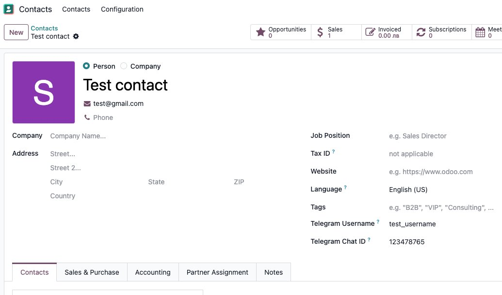
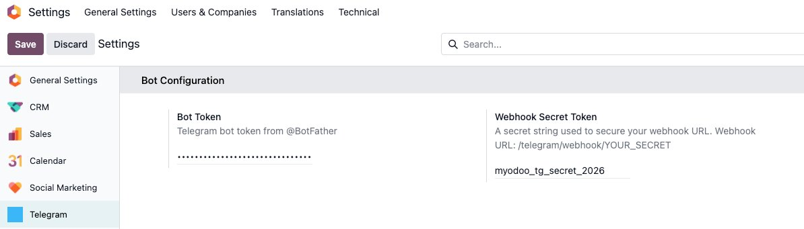
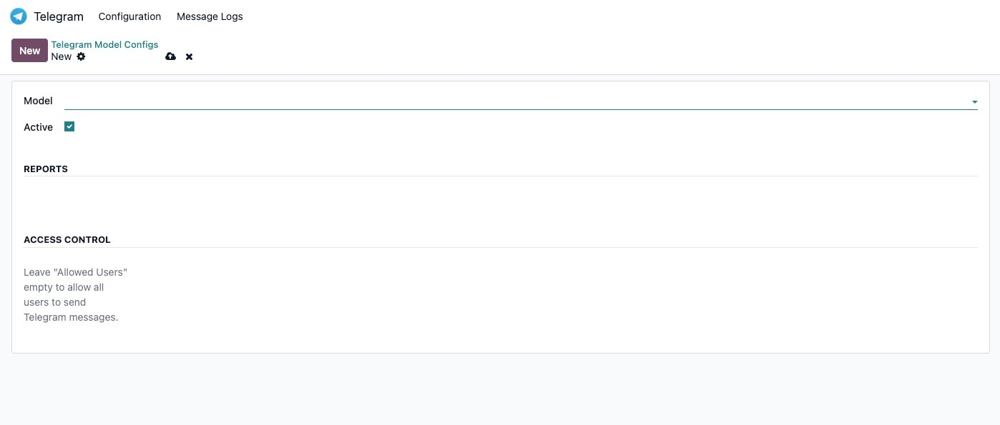
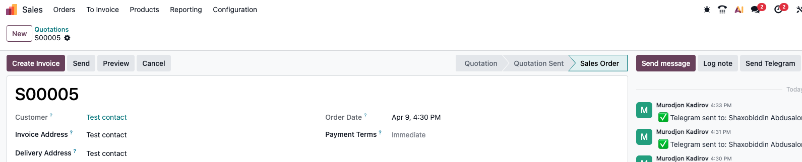

Send text messages and PDF reports to Telegram contacts directly from any Odoo record
Appears in the chatter area of any configured model — next to WhatsApp button if installed.
Select any allowed PDF report and send it directly as a document to Telegram.
Send a plain text message, a PDF, or both at the same time to multiple recipients.
Contact sends /start to your bot — Odoo auto-fills their Telegram Chat ID via webhook.
Control which models show the button, which reports are allowed, and which users can send.
Every send is logged — recipient, status, error, timestamp — plus a chatter note on the record.

Contact form — Telegram Username and Chat ID fields added to every partner

Settings → Telegram — enter your Bot Token and Webhook Secret Token

Telegram → Configuration → Model Configs — configure per-model access and allowed reports

Send Telegram button appears in the chatter area of any configured model (e.g. Delivery Order)
Open Telegram → search @BotFather → send /newbot → follow instructions → copy the Bot Token.
Go to Settings → Telegram. Enter your Bot Token. For Webhook Secret, choose any random string you like, for example:
Remember this string — you will use it in the next step.
Open this URL in your browser once (replace the placeholders):
<BOT_TOKEN> — token from @BotFather (step 1)
<YOUR_DOMAIN> — your Odoo server domain, e.g. mycompany.odoo.com
<WEBHOOK_SECRET> — the secret you entered in Settings (step 2), e.g. myodoo_tg_secret_2026
Full example:
If successful, Telegram returns: {"ok":true,"result":true,"description":"Webhook was set"}
Go to Telegram → Configuration → Model Configs → New.
Select a model (e.g. Sales Order), set Active ✅.
Optionally restrict which PDF reports and which users can send.
Open any contact in Contacts. Fill in Telegram Username (without @).
Example: if their Telegram is @john_smith → enter john_smith.
The contact opens your bot in Telegram and sends /start.
Odoo automatically fills their Telegram Chat ID on the contact record.
After this they can be selected as a recipient.
Open a Sales Order, Invoice, Delivery, or any configured model.
Click Send Telegram in the chatter area.
Select recipients, optionally choose a PDF report and/or type a message → Send.
mail, base — no extra Python packages required/telegram/webhook/<secret_token>ir.config_parameter (System Parameters)ir.actions.report